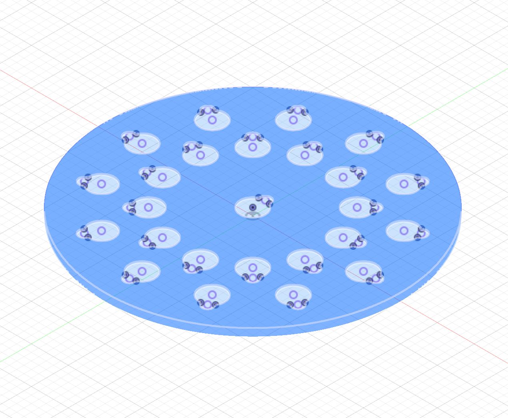

<br>
#### Week 8: CNC Milling, Molding, and Casting
This week's product developed as a spiritual successor of my 3D Design project. My friend who I made the keychain for asked me a very good question- what should he do with the coins he has amassed if he is carrying the most recent one on his keychain?
I thought about it for awhile, and came up with the idea for a press-fit display similar to the ones we would use to store all the state quarters as children. This was a fun way to revisit #D design, as I could tell how much more fluent in CAD I had become. This design took far less time to render than I originally thought, as I learned how to best utilize construction lines and how to copy and rotate sketches and bodies.

The CNC machine was so much fun to use. In some crazy future where I have the money and time to do this sort of work consistently, I would love to have a CNC machine to use. The process was relatively quick, and the design was done before I knew it. However, since I used plywood, there were many splinters and frayed edges that needed to be addressed. Additionally, it didn't cut all the way through the board in some spots due to warping in the wood, so I had to carve the circle out of the wood with the bandsaw.
<img src="IMG_5533.png" width="300px">
After lots and lots of sanding and cutting, I got it down to a more reasonable and polished finish. I haven't done so yet, but I am hoping to stain it and give it to my friend for Christmas.
<img src="IMG_5534.png" width = "300px">
One element of the assignment that I still needed to address was post-processing. We learned how to cast and mold, vaccuum seal, and make epoxy composites. I couldn't quite see how any of these were a necessary step for this specific project (and the board didn't fit in the vacuum sealer anyway.) So, I went in a different direction.
I designed and 3D printed a model for chocolates that have mine and my fiancé's initials on them. Once I had these models, I took them to the vacuum sealer to make chocolate molds. It took me a few trys to get a seal that captured enough detail to be satisfying. At Nathan's suggestion, I eventually poked holes in each of the models to allow more air to be pulled out, getting a more detailed impression. Below is a close-up of the final impression I was satisfied with.
<img src="IMG_5557" width= "300px">